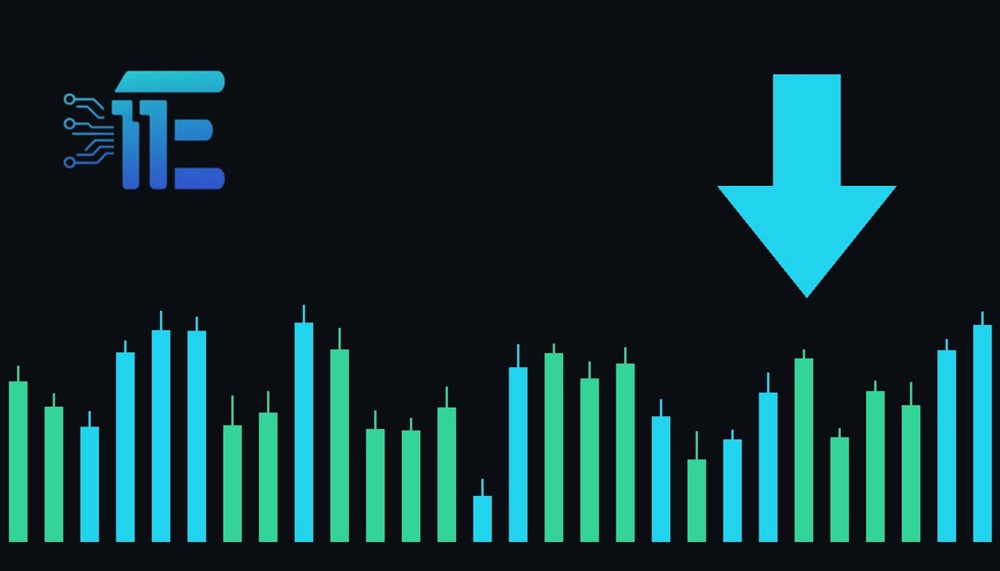

Standard Chartered Highlights Dollar and Yen as Alternative Safe HavensStandard Chartered លើកឡើងពី USD និង JPY ថាជាជម្រើសទីជម្រកសុវត្ថិភាពជំនួស
XAU/USD impact: ▼ Bearishផលប៉ះពាល់លើ XAU/USD: ▼ ធ្លាក់

Standard Chartered noted that the U.S. dollar and Japanese yen could attract investors if gold extends its decline. This shift in safe-haven capital flows directly impacts XAU/USD market dynamics.
Standard Chartered បានបញ្ជាក់ថា ដុល្លារអាមេរិក និងយ៉េនជប៉ុន អាចទាក់ទាញអ្នកវិនិយោគប្រសិនបើសុវត្ថិភាពមាសបន្តធ្លាក់ចុះ។ ការប្តូរទិសដៅទុននេះប៉ះពាល់ផ្ទាល់ដល់ទីផ្សារ XAU/USD។
Standard Chartered informed clients in a note that alternative safe havens could attract investors if precious metals continue to face downward pressure. According to the update, the U.S. dollar and the Japanese yen stand out as the most attractive options for capital seeking safety during a pullback in gold prices.
ស្ថាប័ន Standard Chartered បានជូនដំណឹងដល់អតិថិជនតាមរយៈកំណត់ត្រាមួយថា ទីជម្រកសុវត្ថិភាពជំនួសអាចទាក់ទាញអ្នកវិនិយោគ ប្រសិនបើលោហធាតុមានតម្លៃបន្តប្រឈមនឹងសម្ពាធធ្លាក់ចុះ។ យោងតាមការពន្យល់នេះ ដុល្លារអាមេរិក និងយ៉េនជប៉ុន គឺជាជម្រើសដ៏ទាក់ទាញបំផុតសម្រាប់ទុនដែលស្វែងរកសុវត្ថិភាពក្នុងអំឡុងពេលដែលតម្លៃមាសថយចុះ។
The transmission channel to XAU/USD operates primarily through shifting capital allocations and currency strength. When market participants rotate away from precious metals, safe-haven flows frequently redirect toward the U.S. dollar, driving the currency higher and increasing the opportunity cost for holding dollar-denominated assets.
ច្រកបញ្ជូនទៅកាន់ XAU/USD ដំណើរការជាចម្បងតាមរយៈការប្តូរទិសដៅទុន និងភាពខ្លាំងនៃរូបិយប័ណ្ណ។ នៅពេលដែលអ្នកចូលរួមទីផ្សារបង្វែរទិសដៅចេញពីលោហធាតុមានតម្លៃ ដែលជំរុញឱ្យរូបិយប័ណ្ណនេះឡើងថ្លៃ និងបង្កើនការខាតបង់ឱកាសសម្រាប់ការកាន់កាប់ទ្រព្យសកម្មគិតជាដុល្លារ។
A supportive environment for gold typically relies on sustained safe-haven demand or weaker currency performance, whereas strengthening alternatives like the U.S. dollar or Japanese yen tend to pressure XAU/USD downward. Market participants must weigh broader macroeconomic drivers against shifting institutional sentiment.
បរិយាកាសគាំទ្រដល់មាសជាទូទៅពឹងផ្អែកលើតម្រូវការទីជម្រកសុវត្ថិភាពដែលបន្តមាន ឬភាពខ្សោយនៃរូបិយប័ណ្ណ ខណៈដែលការពង្រឹងជម្រើសជំនួសដូចជាដុល្លារអាមេរិក ឬយ៉េនជប៉ុនមានទំនោរដាក់សម្ពាធថយចុះលើ XAU/USD។ អ្នកចូលរួមទីផ្សារត្រូវតែថ្លឹងថ្លែងពីកត្តាម៉ាក្រូសេដ្ឋកិច្ច ευρύ និងអារម្មណ៍ស្ថាប័នដែលកំពុងផ្លាស់ប្តូរ។
Traders should monitor currency index movements, broader risk sentiment indicators, and key technical support levels to gauge whether capital is truly rotating out of precious metals into fiat safe havens.
អ្នកជួញដូរគួរតែតាមដានចលនាសន្ទស្សន៍រូបិយប័ណ្ណ សូចនាករអារម្មណ៍ហានិភ័យទូទៅ និងកម្រិតគាំទ្របច្ចេកទេសសំខាន់ៗ ដើម្បីវាយតម្លៃថាតើទុនកំពុងប្តូរចេញពីលោហធាតុមានតម្លៃទៅកាន់ទីជម្រកសុវត្ថិភាពរូបិយប័ណ្ណពិតប្រាកដដែរឬទេ។
Key takeawaysចំណុចសំខាន់ៗ
- Standard Chartered highlighted the U.S. dollar and Japanese yen as alternative safe havens.
- Standard Chartered បានចង្អុលបង្ហាញដុល្លារអាមេរិក និងយ៉េនជប៉ុនជាទីជម្រកសុវត្ថិភាពជំនួស។
- Capital rotation away from precious metals can strengthen rival safe-haven currencies and pressure XAU/USD.
- ការបង្វែរទុនចេញពីមាសអាចពង្រឹងរូបិយប័ណ្ណសុវត្ថិភាពគូប្រជែង និងដាក់សម្ពាធលើ XAU/USD។
- Traders should watch currency indices and broader market sentiment indicators for further clues.
- អ្នកជួញដូរគួរតែមើលសន្ទស្សន៍រូបិយប័ណ្ណ និងសូចនាករអារម្មណ៍ទីផ្សារសម្រាប់តម្រុយបន្ថែម។
Original commentary by THE MARKET CODE, based on public reporting from Yahoo! Finance: GC=F News. Written with the help of AI. Educational only, not financial advice.
មតិវិភាគដើមដោយ THE MARKET CODE ផ្អែកលើការរាយការណ៍សាធារណៈពី Yahoo! Finance: GC=F News។ សរសេរដោយមានជំនួយពី AI។ មាតិកាអប់រំប៉ុណ្ណោះ មិនមែនជាដំបូន្មានហិរញ្ញវត្ថុទេ។